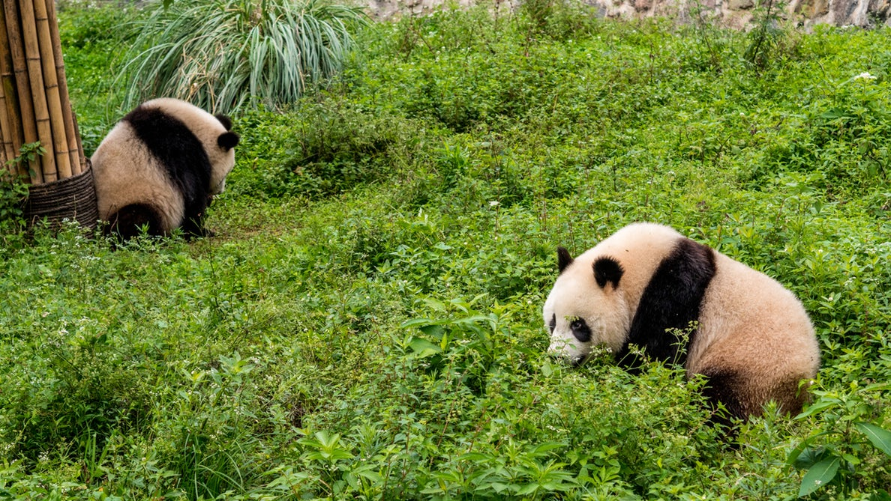
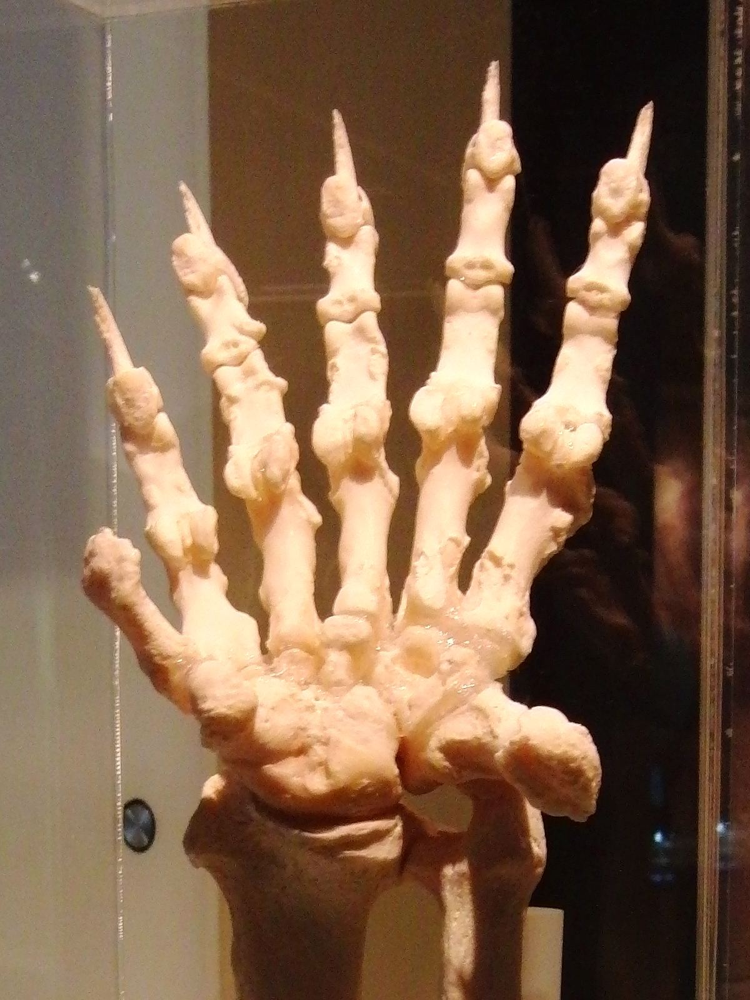

The giant panda, or Aliuropoda melanoleuca is a bear native to the south central region of China. It is easily recognizable due to the large black patches around its eyes, ears, and body. The panda's diet is over 99% bamboo, but it will occasionally eat other wild grasses, tubers, and sometimes meat in the form of small birds or rodents. In captivity, they may also receive honey, various fruits, eggs, or fish. Pandas are known to live in mountain ranges on central China, mainly in Sichuan. Because of rampant deforestation and development, the panda has been forced out of the lowlands where it once thrived. It has become a conservation reliant vulnerable species, which means that it relies on human efforts to keep the species alive.
Pandas have black and white fur, and adults can measure from 1.2 to 1.9 meters long, and 60 to 90 cm tall at the shoulder. Male pandas can weight up to 350 lbs, and females can weigh from 150 lbs to 276 lbs. The panda has the typical body shape of all bears. Though scientists are not sure why pandas have spots, it is suggested that the bold coloring provides effective camoflauge in their native snowy and rocky environment. Its thick coat helps keep it warm in the cold climates. Panda paws have a "thumb" and five fingers that help it to hold bamboo while eating. Pandas also have the second-longest tails out of the bear family, measuring from 10-15 cm. In the wild, pandas typically live an average of 20 years, while in captivity, they can live around 30 years. A female bear named Jia Jia was the oldest bear to live in captivity. She was born in 1978 and lived until 2016 (38 years).
The panda is actually classified as carnivore despite its diet consisting promarily of bamboo. Pandas' digestive systems are still that of a carnivore's, and it has many carnivore-specific genes. AS a result of this, they derive little energy and protein from bambooo. They are born with sterile intestines, and require bacteria from their mother's feces to digest vegetation. The giant panda eats 20 to 30 lbs of bamboo shoots a day to compensate for the limited energy content of its diet. This also has effects on its behavior; the panda tends to limit social interactions and and avoids steeply sloped terrain to conserve energy.
List of US Zoos that have Pandas:
Panda Population Chart:
| Year | 1976 | 1985 | 1987 | 1994 | 1995 | 2003 | 2012 | 2013 |
|---|---|---|---|---|---|---|---|---|
| Wild Population | 1000 | 800-1200 | >1000 | 1200 | 1000 | 1596 | n/a | 1864 |
| Captivity Population | n/a | n/a | n/a | n/a | n/a | 164 | 341 | 375 |

Siblings at Wolong Nature Reserve

Structure of a left panda paw